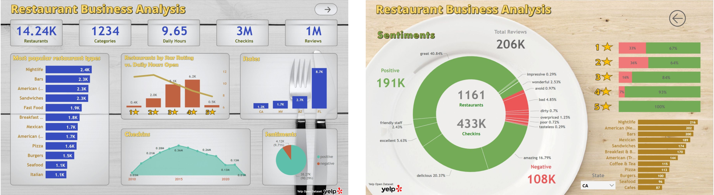
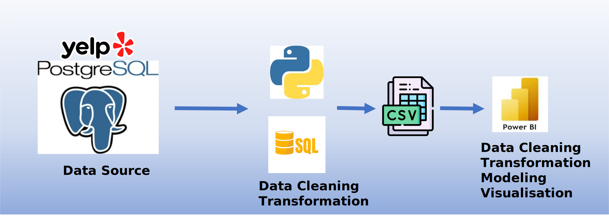
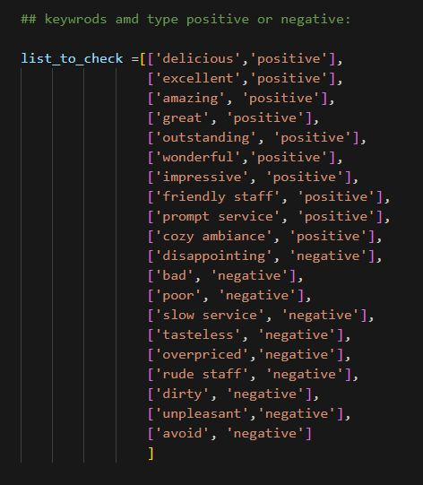
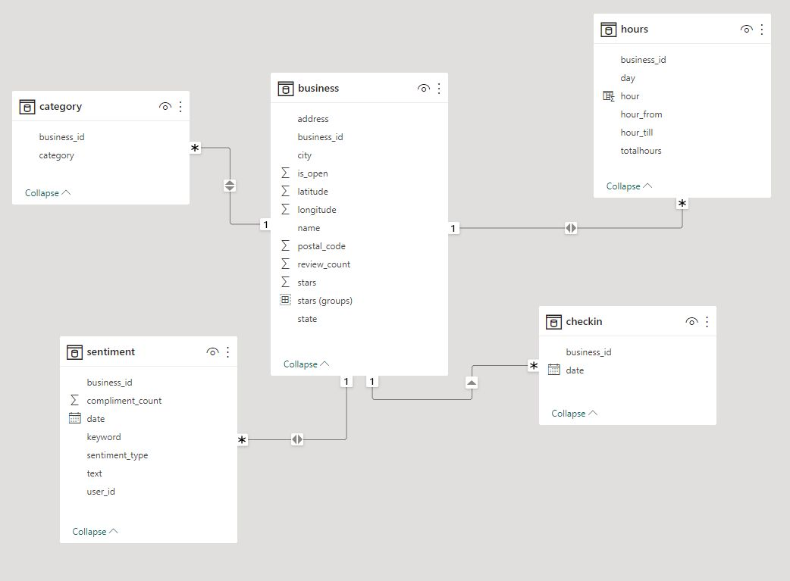
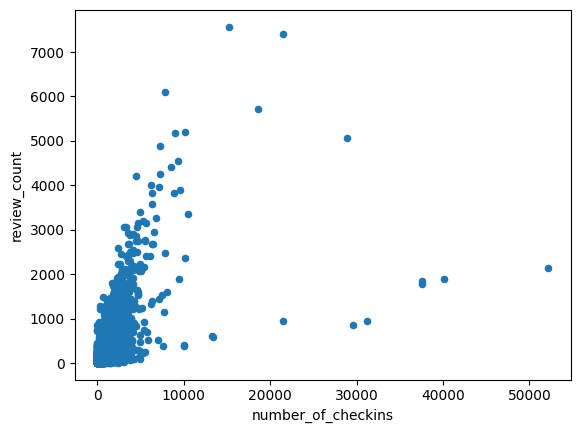
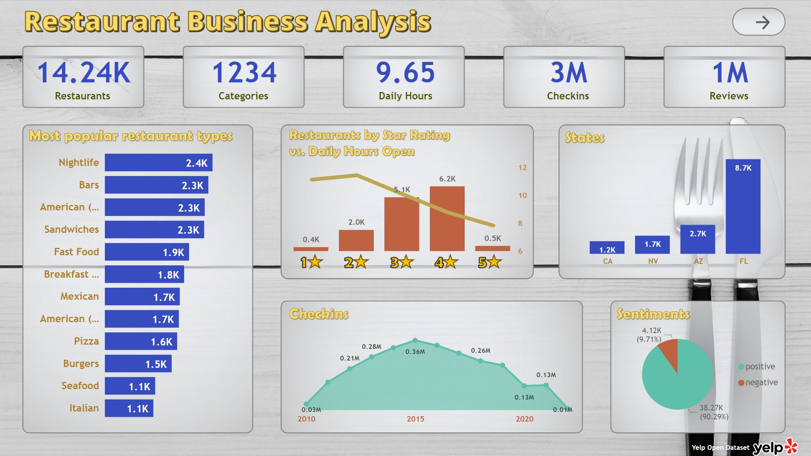

Restaurant Business Analysis
OVERVIEW - PROBLEM STATEMENT
Yelp is an online platform and mobile app that allows users to discover and review local businesses such as restaurants, hotels, and service providers. It provides a platform for people to share their experiences, rate businesses, and write reviews. Yelp also offers features like business information, photos, menus, and user-generated content to help users make informed decisions about where to go or what services to use. The platform has a significant influence on businesses, as positive or negative reviews can impact their reputation and success.
This project is based on the Yelp Open Dataset which has been uploaded to PostgreSQL database for analysis ( Yelp Open Dataset Transformation project).
This data analysis project aims to explore the Yelp dataset for restaurant businesses to identify key factors influencing customer satisfaction and business success, utilizing metrics such as star ratings, review counts, sentiment analysis, and other relevant variables, with the goal of providing actionable insights for restaurant owners and managers to enhance their operations and drive competitive advantage in the industry.
Development Process
Github repository of this project Data collection & Preparation: The data for this project was obtained from the previously created PostgreSQL database. The dataset has been significantly narrowed down, including only four US states and businesses categorized as restaurants. The Users table has been excluded. To accomplish this, I wrote Python code to execute queries, create tables, and export them as CSV files.
The SQL queries for the final tables were developed using pgAdmin4 and DBeaver tools. Subsequently, a Python code was utilized to generate CSV files for Power BI analysis.
For sentiment analysis, another Python code runs queries, compiles the results into a table, and saves it as a CSV file. The sentiment analysis is based on a predefined list.
Data Analysis and Modeling: The datasets are further transformed using Power Query/Power BI. The data model for this project can be found here:
Visualization
I conducted preliminary analyses using Pandas/Python. For instance, I examined the correlation between the Number of Checkins and the number of reviews. The correlation coefficient was calculated as 0.6836066984992777.
...
